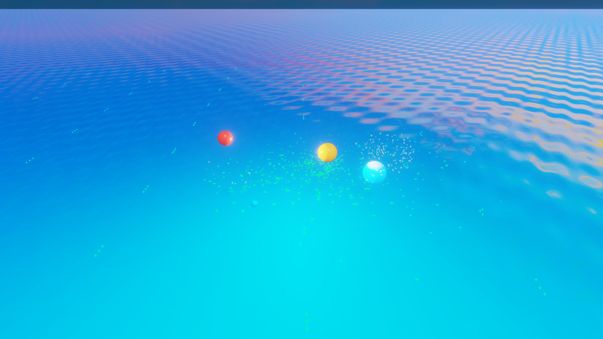
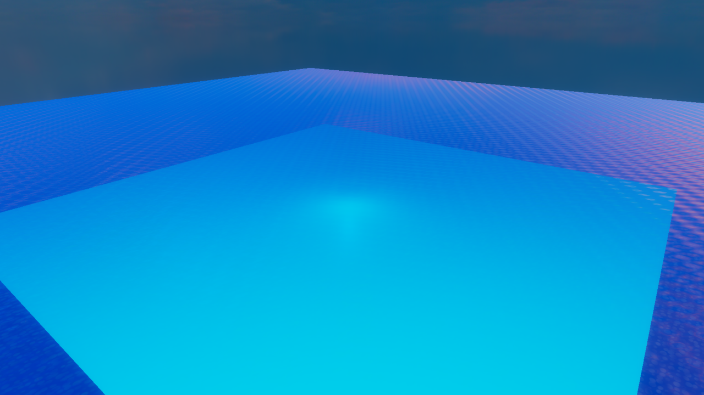
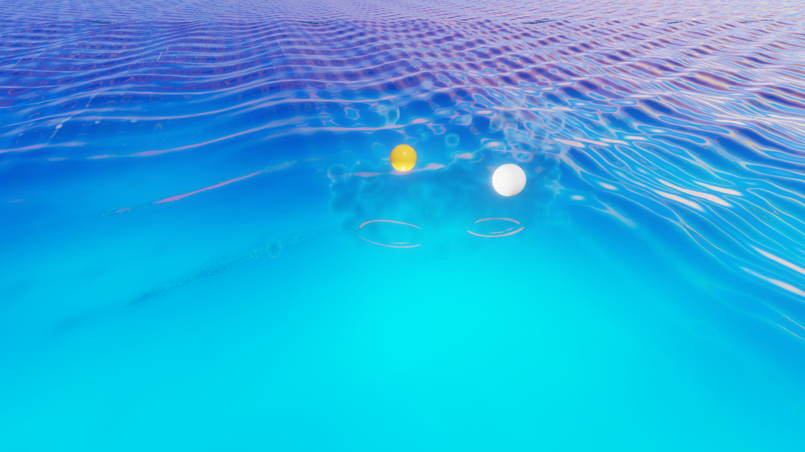
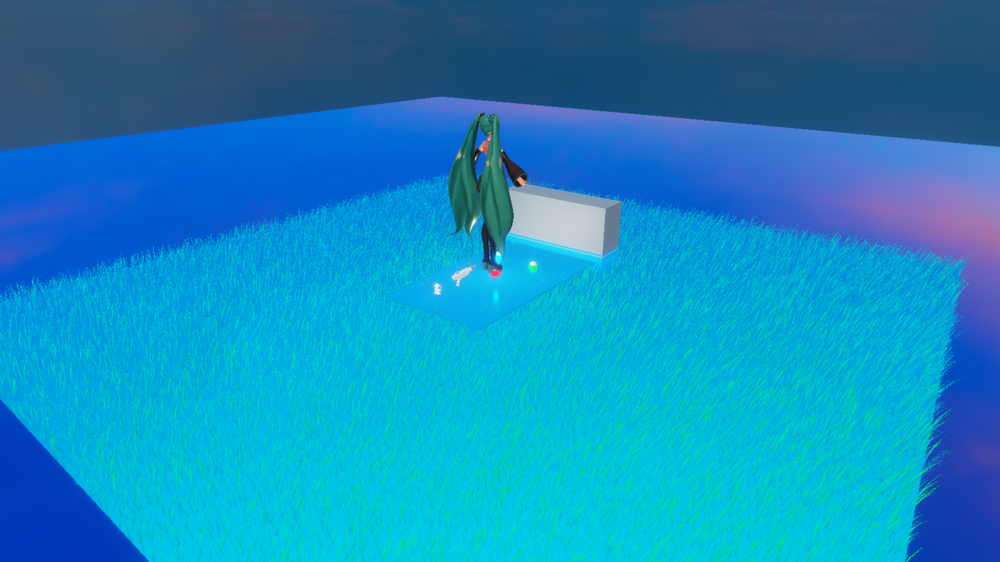

PBF 流体
水に粒子の流体を足して、物が飛び込んだときのしぶき・水の盛り上がり・流れ込みを、その場で計算して見せる部品です。Water Body（水域）と同じ GameObject に付けて使います。
こんなときに使う
- 風船や敵が水に落ちたときに、本物の水のようなしぶきと波を出したい
- 放水口から水を流して、地形のくぼみに水がたまる様子を見せたい
- 広い湖や海はそのままの見た目で軽く保ちつつ、着水した所だけ派手に水を跳ねさせたい
概要
PBF（Position Based Fluids）は、水を小さな粒の集まりとして計算する方法です。粒どうしが押し合って密度を一定に保つので、水がこぼれる・たまる・跳ねる動きが自然に出ます。この部品は、計算した粒から水面を作り、同じ GameObject の Water Body の描画・浮力・水中判定に渡します。
使い方は、目的に合わせて次の 3 通りから選びます。
| やり方 | 設定 | 向いている場面 | 重さ |
|---|---|---|---|
| 全体を粒で計算 | 水面効果モード＝PBF 粒子シミュレーション、Water Body の Wave Source＝Fluid Simulation | 水槽・小さな池など、狭い範囲の水全体を本物らしく動かす | 重い（粒の数に比例） |
| 局所 PBF ＋ GPU 浅水波（ハイブリッド） | 「局所PBF粒子のみ」をオン、Water Body の「GPU 浅水波」をオン、Wave Source＝Fluid Simulation | 広い湖。普段は軽い浅水波で波を伝え、着水点の周りだけ粒で計算する | 中くらい |
| イベント式の波紋としぶき | 水面効果モード＝イベント式の波紋としぶき | 海や大きな湖。いつもの水面はそのまま描き、物が当たった瞬間だけ波紋と飛沫を出す | 軽い（当たったときだけ計算） |
デモシーン
どれも resources/Game/Inflate/ にあります。開いて実行（F5）すると、それぞれの組み合わせの動きを確かめられます。
| シーン | 見られるもの |
|---|---|
Inflate_PbfImpactDemo | 全体を粒で計算した水に物が落ちる、基本の着水 |
Inflate_HybridShallowLocalPbf | GPU 浅水波の湖に、局所 PBF の放水を組み合わせたハイブリッド |
Inflate_EventDrivenWater / Inflate_EventDrivenContacts | イベント式。Gerstner 波の水面に、当たった所だけ波紋と飛沫 |
Inflate_EventDrivenSplashStress | イベント式で大量に着水させる負荷確認（FFT 海洋＋SSFR の飛沫） |
Inflate_FftOcean | FFT 海洋（風速と吹送距離から作る海の波）とイベント式の飛沫 |
Inflate_PbfLandscapeFull / Inflate_PbfLandscapePerf | 地形の上に放水して水をためる。Perf は広い水で速さを測る用 |




水に PBF 流体を付ける
- Water Body の付いた GameObject を選ぶ（無ければ先に水を作る）
- インスペクターの「コンポーネントを追加」から PBF 流体（Physics の分類）を付ける
- 上の表から使い方を選び、「水面効果モード」と Water Body の Wave Source を合わせる
- 「流体の半幅 X / Z」と「流体の深さ」で、粒で計算する範囲を水の大きさに合わせる
- 実行（F5）して、物を落として確かめる。重いときは速さの調整を見る
プロパティ
インスペクターに出る順に、まとまりごとに並べています。
水面効果モードとイベント式
| 名前 | 既定値 | 範囲 | 説明 |
|---|---|---|---|
| 水面効果モード | PBF 粒子シミュレーション | 選択 | PBF 粒子シミュレーションは水を粒で計算します。イベント式の波紋としぶきは Water Body の普段の描画を保ったまま、衝撃があったときだけ波紋と飛沫を更新します |
| イベント時 PBF 粒子上限 | 2048 | 64〜2048 | イベント式で、1 回の着水に使う粒の上限 |
| イベント飛沫の計算品質 | 高品質 | 軽量（最大 256 粒）／標準（最大 768 粒）／高品質（最大 2048 粒） | イベント式の局所 PBF の粒の数だけを制限します。描画の品質には影響しません |
| 飛沫乱数シード（0=自動） | 0 | 0〜 | 飛沫の散り方の乱数。0 なら毎回変わる |
| 飛沫の不規則さ | 0.7 | 0〜1 | 大きいほど飛沫の形がばらつく |
| 斜め着水の前方偏り | 0.65 | 0〜1 | 斜めに飛び込んだとき、進む向きへ飛沫を偏らせる強さ |
| 飛沫の広がり倍率・飛沫の発生量倍率 | 1.0・2.5 | 0.2〜3・0〜6 | 飛沫の広がる範囲と量 |
| 飛沫描画方式（0:従来 1:SSFR） | 1 | 0〜1 | 1 の SSFR は、粒を画面上で溶け合わせて一続きの液体に見せる描き方です |
| SSFR画質・融合の滑らかさ・描画粒子上限 | 0・2・2048 | 0〜2・1〜3・32〜4096 | SSFR の画質（0:軽量 1:標準 2:高）、粒どうしをなめらかにつなぐ強さ、描く粒の上限 |
| SSFR光吸収・屈折の強さ・縁の反射・反射ハイライト・粒子の液体密度 | 3.0・0.012・0.85・0.22・1.0 | 0〜30・0〜0.1・0〜3・0〜3・0.05〜8 | SSFR の液体の見た目。吸収が大きいほど厚い所が濃く、屈折が大きいほど奥がゆがんで見える |
計算と衝突
| 名前 | 既定値 | 範囲 | 説明 |
|---|---|---|---|
| 実行中に計算 | オン | オフにすると実行中も粒を動かさない | |
| シーン物体と衝突 | オン | 粒がシーンの物（球・箱・カプセルなど）に当たる | |
| 高速粒子の連続衝突 | オン | 球・箱・カプセルとの相対的な動きを追って、1 回の計算の間に粒がすり抜けるのを防ぐ | |
| 障害物更新間隔 | 0 | 0〜0.5 秒 | 0 なら毎回、正の値なら衝突形状を作り直す回数を減らして軽くする |
| GPUで流体を計算 | オフ | 対応する範囲を GPU で計算します。障害物がある場合や失敗したときは、理由を「状態」に出して CPU へ戻ります | |
| GPU静止粒子スリープ | オン | 動いている粒とその周りだけを GPU で計算し、止まった粒は休ませる | |
| GPU起床速度しきい値・GPU起床障害物余白 | 0.32・0.25 | 0.001〜10・0〜10 | 休んでいる粒を起こす速さの目安と、障害物の周りで起こす範囲 |
| CPU計算を並列化 | オン | CPU で計算するとき、共通のジョブシステムで複数のコアを使う | |
| CPU粒子同期間隔 | 1 | 1〜16 フレーム | GPU で計算した粒を CPU へ読み戻す間隔。大きいほど軽い |
| 粒子間隔・平滑化距離 | 0.22・0.38 | 0.05〜10 | 粒の細かさと、粒が影響し合う距離。間隔を小さくするほど細かく、重くなる |
| 基準密度・粒子質量（0=間隔から自動） | 1000・0 | 水の密度。Water Body の「流体密度」と合わせると、粒の計算と浮力が同じ密度になる | |
| 粘性・重力・反発・時間倍率・反復回数 | 0.035・9.80665・0.02・1・4 | 0〜1・0〜100・0〜1・0〜4・1〜12 | 水のねばり、重力、壁で跳ね返る強さ、時間の速さ、1 回の計算の正確さ |
| 最大粒子数 | 6000 | 1〜262144 | 粒の数の上限 |
| 流体の半幅 X・半幅 Z・深さ | 3・3・1.5 | 粒で計算する範囲（GameObject の位置が中心） | |
| 初期水量を生成（OFF=局所PBF） | オン | 始めから範囲を水で満たす。オフなら放水した分だけになる | |
| 上面を開放する | オン | 範囲の上を開けて、しぶきが上へ飛び出せるようにする |
局所 PBF（ハイブリッド）
| 名前 | 既定値 | 範囲 | 説明 |
|---|---|---|---|
| 局所PBF粒子のみ | オフ | 粒を局所の範囲だけに限り、Water Body の浅水波へ着水の衝撃を返す。広い湖で使う | |
| 局所水塊を初期生成 | オン | 局所の範囲に、始めから水の塊を置く | |
| 局所中心を放水点へ追従 | オン | 局所の範囲の中心を、放水している所へ合わせて動かす | |
| 局所領域の中心・半幅・深さ | (0,0,0)・12・2 | 半幅 1〜100、深さ 0.1〜100 | 粒で計算する局所の範囲 |
| 局所粒子の上限 | 32768 | 2000〜50000 | 局所の範囲で使う粒の上限 |
| 飛沫の GPU インスタンス描画 | オフ | 飛沫を GPU でまとめて描き、たくさんの飛沫を軽く出す |
水面の作り方
| 名前 | 既定値 | 範囲 | 説明 |
|---|---|---|---|
| 表面解像度 | 48 | 8〜128 | 粒から作る水面の細かさ |
| 水面再構成間隔 | 0 | 0〜1 秒 | 水面を作り直す間隔。0 なら毎フレーム |
| 粒子密度から3D水面を再構成 | オン | 粒の密度から立体の水面を作る。こぼれた水や水柱も面になる | |
| 軽量な高さ場水面・GPU生成の高さ場水面 | オフ・オフ | 水面を「場所ごとの高さ」だけで作る軽い方法。GPU 生成は GPU で作る | |
| GPU水面を自動選択 | オン | GPU で計算しているときは、GPU 生成の水面を自動で使う | |
| 水面の密度しきい値 | 1.15 | 0.05〜16 | どれだけ粒が集まったら水面とみなすか |
飛沫と泡
| 名前 | 既定値 | 範囲 | 説明 |
|---|---|---|---|
| 飛沫と泡を生成 | オン | 速く動く粒から飛沫を、水面の荒れた所に泡を出す | |
| 物理粒子を表示 | オフ | 計算に使っている粒をそのまま表示する（調整用） | |
| 飛沫の発生量・飛沫を生む速度 | 4・1.5 | 0〜100・0.1〜100 | 飛沫の量と、どれだけ速い粒から飛沫を出すか |
| 飛沫の半径・飛沫の寿命・泡の寿命 | 0.025・1.2・4 | 飛沫の大きさと、飛沫・泡が消えるまでの秒数 | |
| 飛沫と泡の上限・泡判定の粒子上限 | 2048・8192 | 同時に出す飛沫と泡の数、泡を出すか調べる粒の数の上限 |
放水と排出
| 名前 | 既定値 | 説明 |
|---|---|---|
| 粒子を連続発生・発生粒子数／秒 | オフ・200 | 放水口のように、毎秒この数の粒を出し続ける |
| 発生位置・発生領域のサイズ・初速度（ローカル） | (0,0.25,0)・(0.5,0.1,0.5)・(0,−1,0) | 放水する場所・大きさ・向きと速さ |
| 排出領域を有効化・排出中心・排出領域の半幅 | オフ・(0,−0.8,0)・(0.25,0.25,0.25) | この箱に入った粒を消す。放水し続けても水があふれないようにする |
実行中の表示（読み取り専用）
実行中のインスペクターに、実行時の粒子数・平均密度・直近の計算刻み数・状態が出ます。GPU で計算できずに CPU へ戻ったときは、その理由が「状態」に出ます。
そのほかの項目
（2026-10-24 時点で表に無かった項目。コードから書いた内容） SSFR は、粒子を画面上で 1 枚の水面に見せる描き方です。
| 表示名 | 内部名 | 既定値 | 範囲 | 説明 |
|---|---|---|---|---|
| SSFR画質（0:軽量 1:標準 2:高） | event_ssfr_quality | 0 | 0〜2 | |
| SSFR融合の滑らかさ | event_ssfr_filter_radius | 2 | 1〜3 | |
| SSFR描画粒子上限 | event_ssfr_max_particles | 2048 | 32〜4096 | |
| SSFR屈折の強さ | event_ssfr_refraction | 0.012 | 0〜0.1 | |
| SSFR縁の反射 | event_ssfr_fresnel | 0.85 | 0〜3 | |
| SSFR反射ハイライト | event_ssfr_highlight | 0.22 | 0〜3 | |
| SSFR粒子の液体密度 | event_ssfr_thickness | 1 | 0.05〜8 | |
| 流体の半幅 Z | half_extent_z | 3 | 0.1〜1000 | |
| 局所領域の半幅 | localized_region_half_extent | 12 | 1〜100 | |
| 局所領域の深さ | localized_region_depth | 2 | 0.1〜100 | |
| 発生位置（ローカル） | emitter_position | 0, 0.25, 0 | ||
| 排出中心（ローカル） | drain_position | 0, -0.8, 0 |
速さの調整
- まず「GPUで流体を計算」と「GPU静止粒子スリープ」をオンにする
- 広い水は全体を粒で計算せず、ハイブリッドかイベント式を使う
- 「粒子間隔」を大きくすると粒が減り、ぐっと軽くなる（細かさは落ちる）
- 「CPU粒子同期間隔」と「水面再構成間隔」を上げると、読み戻しと水面作りの回数が減る
- FPS を正しく測るときは、環境変数
REPLAY_PROFILE_REAL_TIME=1を付けてInflate_PbfLandscapePerfで測る（付けないと 60 付近で頭打ちになる）
制限GPU での計算は、障害物があると一部 CPU へ戻ることがあります（理由は「状態」に出ます）。粒の数を大きくすると、GPU で計算していても飛沫・水面作り・読み戻しで重くなります。全体を粒で計算するのは、狭い範囲の水に向いた使い方です。
関連項目
- Water Body（水域）（Wave Source、FFT 海洋、GPU 浅水波）
- 膨張（風船が水に落ちたときの浮力）
- ランドスケープ（地形へ放水して水をためる）